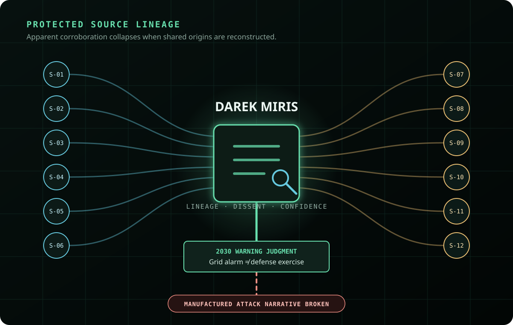

Human sources as people
Each protected source has a distinct access path, motivation, reporting strength, omission pattern, contradiction history, and contribution that survives later scrutiny.
Long-form HUMINT case study · Static canon
A research-grounded intelligence narrative following senior analyst Darek Miris through fourteen years of fragmentary reporting, compromised source chains, deception, institutional pressure, and a final warning judgment that prevents an avoidable national crisis.
DOCX · approximately 100,500 words · SHA-256 published below

This is a fictional nation-state and synthetic intelligence case created for analytic training, narrative research, and future simulation design. It does not contain operational sources, real intelligence reporting, classified information, or claims of government service.
The artifact
The manuscript is designed as a permanent canonical layer for a later interactive simulation. Characters, institutions, source histories, events, and identifiers remain stable while future scenario packages can branch into alternate decisions and endings without overwriting the source narrative.
Each protected source has a distinct access path, motivation, reporting strength, omission pattern, contradiction history, and contribution that survives later scrutiny.
Assessments record confidence changes, competing hypotheses, dissent, collection gaps, legal boundaries, negative evidence, and the difference between a plausible story and a supported judgment.
Darek's value is not omniscience. It is the discipline to separate fused narratives, communicate uncertainty, and recommend the narrowest lawful action capable of addressing the supported threat.
HUMINT and analytic tradecraft
The story does not reward simple source counting. It makes the analyst reconstruct where a claim originated, how it changed in transmission, and what still holds after apparent corroboration collapses.
Multiple channels repeat the same original claim, creating the appearance of independent confirmation until lineage is rebuilt.
Collectors, intermediaries, and public narratives alter what sources remember, emphasize, or believe they independently observed.
A translated phrase gains strategic meaning it did not carry in its original setting, while missing context changes the apparent intent.
A historically reliable source is wrong at a decisive moment; an unreliable source supplies one fact that survives every challenge.
Expected mobilization, logistics, command, and political indicators fail to appear, constraining the most alarming hypothesis.
Operational urgency never erases authorization, proportionality, source protection, minimization, or the duty to preserve dissent.
Senior analyst narrative
Darek assembles a slow institutional history from uneven access, personal motives, missing records, and apparently minor contradictions.
The case expands into eight directed operatives, fourteen knowing facilitators, and twenty participants who understand only limited parts of the wider strategy.
Reporting volume increases while independence decreases. Darek records dissent, rebuilds source lineage, and resists pressure to convert ambiguity into certainty.
A grid alarm and a defense exercise are unrelated events being combined into a manufactured attack narrative. That distinction breaks the escalation chain.
The warning protects election administration, preserves the legitimate transfer of power, and enables narrow action against the supported threat. The hostile crisis operation is solved; the 2019 executive death remains unresolved.
Complete static manuscript
The downloadable Word document contains the complete canonical narrative and remains the authoritative static layer for future plug-and-play Browser OS scenarios. Interactive branches may create alternate outcomes, but they do not rewrite the manuscript.
D457D797FA5C943D5BB7E7351F62D4A115889B6844F548B8203A301D723B88EB
All 28 manuscript integrity checks passed with zero reported accessibility findings. Final pagination and visual rendering remain dependent on the reader's Word-compatible viewer.